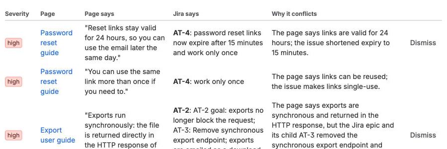
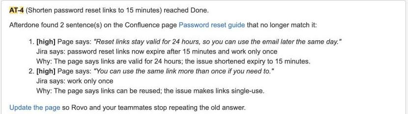

For dev teams on Jira & Confluence Cloud
When work closes in Jira, the Confluence pages about it quietly go out of date. Afterdone finds the exact sentences that no longer match, before Rovo serves them as answers.
Get a free Rovo Drift AuditWe review up to 20 of your pages by hand. Report in 3 business days. No install, no credit card.
How it works
Install it and it starts with the next Epic or issue your team closes.
An Epic or issue moves to Done. A version release works too, and you can check any issue by hand.
Afterdone reads the Confluence pages linked to the issue or that mention it, and compares them with what shipped.
The Drift Report shows the sentence, what Jira says, and why. The issue's reporter and assignee get a Jira email.
What you actually see
Real screens from a test site.


Why now
A page written last week can already be wrong. Your team closed the Epic, changed the API, dropped the feature. The spec, the runbook and the onboarding guide still say the old thing.
Rovo reads those pages and answers with confidence. Your people act on wrong information, and from December 3, 2026, every Rovo Chat answer draws on your credits.
Stale-page reminders don't catch this. They tell you a page is old, not that it's wrong.
Built to be trusted
Made for teams that can't send their docs to outside servers.
Built on Atlassian Forge. Your content never leaves Atlassian's infrastructure: no external servers, no data egress.
Afterdone never edits, archives or deletes a page. Your team decides what to fix.
Every finding quotes the page sentence and the Jira text it conflicts with, so you can verify it in seconds.
Tell us about your setup. We'll pick one recently closed Epic with you and show you which Confluence pages contradict it. Free for the first 10 teams.
Get a free Rovo Drift AuditWe'll only use your email to contact you about the audit. No newsletter, no sharing.